Applications¶
Introduction¶
Applications are python scripts built on the simtools Library that execute a simple, well defined task. These applications will be used as building blocks for the Simulation System Workflows.
The application scripts can be found in gammasim-tools/applications.
The applications expect a config file named config.yml in your running directory. Please, follow the instructions in Configuration to setup your config file.
Some applications require one or multiple file names as input in the command line. The system will first search on your local directory for these files, and in case it is not found, it will search into the directories given by the config parameter modelFilesLocation.
The output files from the applications will be written to $outputLocation/$label, where outputLocation is a config parameter and label is the name of the application. The plots produced directly by the application are stored in the sub-directory application-plots. The high-level data produced intermediately (e.g PSF tables) can be found in the sub-directories relative to the specific type of application (e.g ray-tracing for optics related applications, camera-efficincy for camera efficiency applications etc). All files related to the model (e.g sim_telarray config files) are stored in the sub-directory model.
Below you find the list of the currently available applications and their respective documentation.
List of Applications¶
derive_mirror_rnda¶
Summary¶
This application derives the parameter mirror_reflection_random_angle (mirror roughness, also called rnda here) for a given set of measured D80 of individual mirrors. The mean value of the measured D80 in cm is required and its sigma can be given optionally but will only be used for plotting. The individual mirror focal length can be taken into account if a mirror list which contains this information is used from the Model Parameters DB or if a new mirror list is given through the argument mirror_list. Random focal lengths can be used by turning on the argument use_random_focal length and a new value for it can be given through the argument random_flen.
The algorithm works as follow: A starting value of rnda is first defined as the one taken from the Model Parameters DB (or alternativelly one may want to set it using the argument rnda). Secondly, ray tracing simulations are performed for single mirror configurations for each mirror given in the mirror_list. The mean simulated D80 for all the mirrors is compared with the mean measured D80. A new value of rnda is then defined based on the sign of the difference between measured and simulated D80 and a new set of simulations is performed. This process repeat until the sign of the difference changes, meaning that the two final values of rnda brackets the optimal. These two values are used to find the optimal one by a linear interpolation. Finally, simulations are performed by using the the interpolated value of rnda, which is defined as the desired optimal.
A option no_tunning can be used if one only wants to simulate one value of rnda and compare the results with the measured ones.
The results of the tunning are plotted. See examples of the D80 vs rnda plot, on the left, and the D80 distributions, on the right.
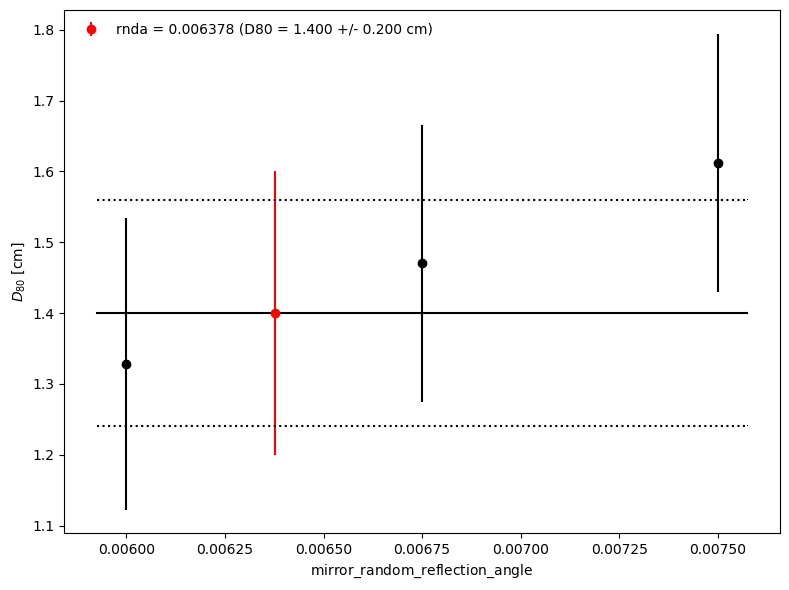 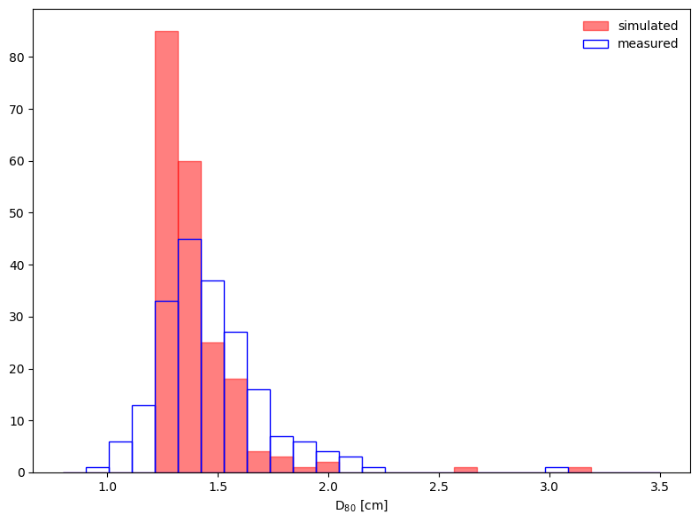{kind=link}
{kind=link}
Command line arguments¶
- tel_name (str, required)
Telescope name (e.g. North-LST-1, South-SST-D, …)
- model_version (str, optional)
Model version (default=prod4)
- mean_d80 (float, required)
Mean of measured D80 [cm]
- sig_d80 (float, optional)
Std dev of measured D80 [cm]
- rnda (float, optional)
Starting value of mirror_reflection_random_angle. If not given, the value from the default model will be used.
- d80_list (file, optional)
File with single column list of measured D80 [cm]. It is used only for plotting the D80 distributions. If given, the measured distribution will be plotted on the top of the simulated one.
- mirror_list (file, optional)
Mirror list file (in sim_telarray format) to replace the default one. It should be used if measured mirror focal lengths need to be taken into account.
- use_random_flen (activation mode, optional)
Use random focal lengths, instead of the measured ones. The argument random_flen can be used to replace the default random_focal_length from the model.
- random_flen (float, optional)
Value to replace the default random_focal_length. Only used if use_random_flen is activated.
- test (activation mode, optional)
If activated, application will be faster by simulating only few mirrors.
- verbosity (str, optional)
Log level to print (default=INFO).
Example¶
MST - Prod5 (07.2020)
Runtime about 90 min.
python applications/derive_mirror_rnda.py --tel_name North-MST-FlashCam-D --mean_d80 1.4 --sig_d80 0.16 --mirror_list mirror_MST_focal_lengths.dat --d80_list mirror_MST_D80.dat --rnda 0.0075
Expected output:
Measured D80:
Mean = 1.400 cm, StdDev = 0.160 cm
Simulated D80:
Mean = 1.401 cm, StdDev = 0.200 cm
mirror_random_reflection_angle
Previous value = 0.007500
New value = 0.006378
Todo
Change default model to default (after this feature is implemented in db_handler)
Fix the setStyle. For some reason, sphinx cannot built docs with it on.
validate_optics¶
Summary¶
This application validates the optical model parameters through ray tracing simulations of the whole telescope, assuming a point-like light source. The output includes PSF (D80), effective mirror area and effective focal lenght as a function of the off-axis angle. The telescope zenith angle and the source distance can be set by command line arguments.
Examples of the plots generated by this applications are shown below. On the top, the D80 vs off-axis is shown in cm (left) and deg (right). On the bottom, the effective mirror area (left) and the effective focal length (right) vs off-axis angle are shown.
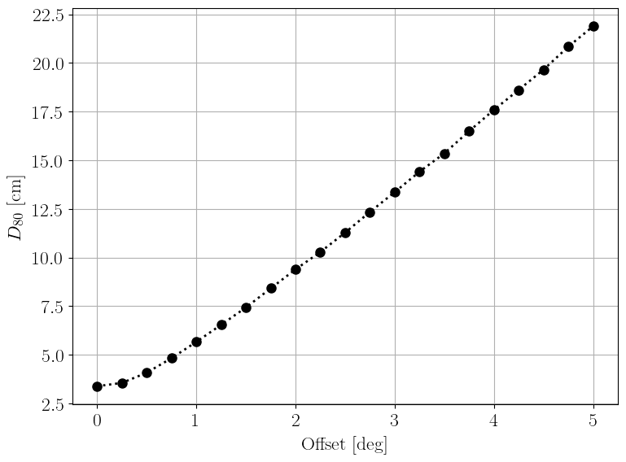 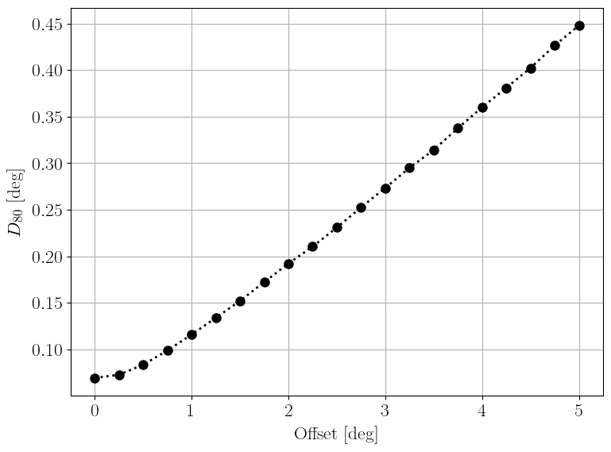 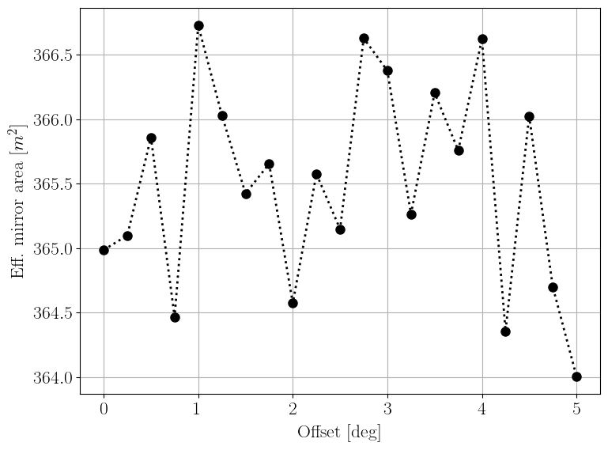 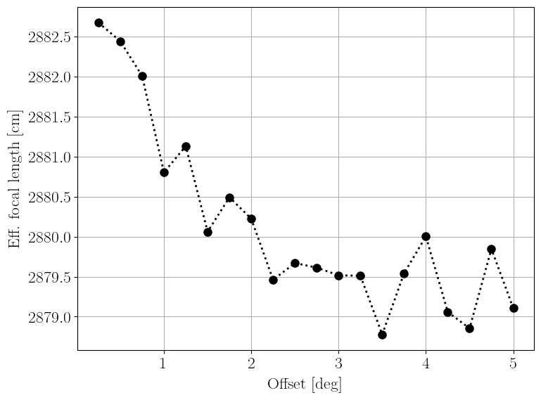{kind=link}
{kind=link}
{kind=link}
{kind=link}
Command line arguments¶
- tel_name (str, required)
Telescope name (e.g. North-LST-1, South-SST-D, …).
- model_version (str, optional)
Model version (default=prod4).
- src_distance (float, optional)
Source distance in km (default=10).
- zenith (float, optional)
Zenith angle in deg (default=20).
- max_offset (float, optional)
Maximum offset angle in deg (default=4).
- test (activation mode, optional)
If activated, application will be faster by simulating fewer photons.
- verbosity (str, optional)
Log level to print (default=INFO).
Example¶
LST-1 Prod5
Runtime about 50 min.
python applications/validate_optics.py --tel_name North-LST-1 --max_offset 5.0
Todo
Change default model to default (after this feature is implemented in db_handler)
compare_cumulative_psf¶
Summary¶
This application simulates the cumulative PSF and compare with data (if available).
The telescope zenith angle and the source distance can be set by command line arguments.
The measured cumulative PSF should be provided by using the command line argument data. A file name is expected, in which the file should contains 3 columns: radial distance in mm, differential value of photon intensisity and its integral value.
The MC model can be changed by providing a yaml file with the new parameter values using the argument pars (see example below).
Examples of the plots generated by this applications are shown below. On the left, the cumulative PSF and on the right, the simulated PSF image.
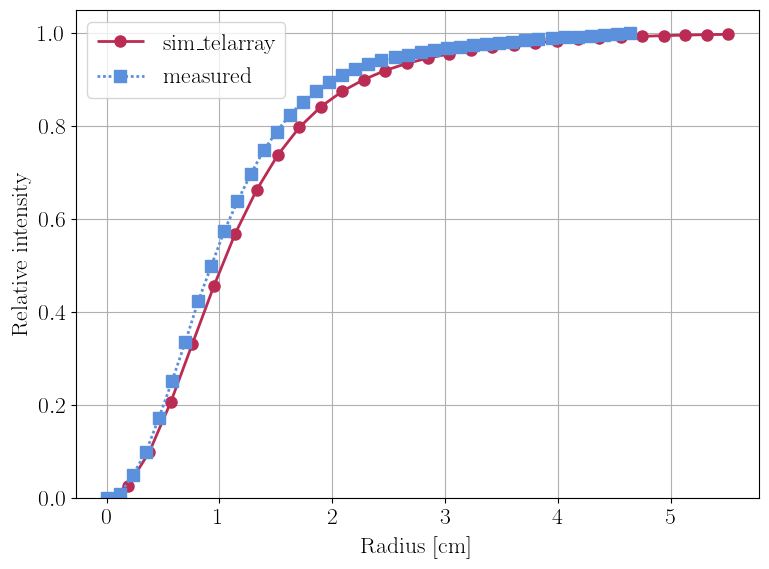 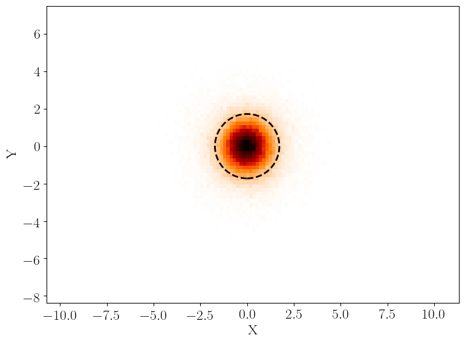{kind=link}
{kind=link}
Command line arguments¶
- tel_name (str, required)
Telescope name (e.g. North-LST-1, South-SST-D, …).
- model_version (str, optional)
Model version (default=prod4).
- src_distance (float, optional)
Source distance in km (default=10).
- zenith (float, optional)
Zenith angle in deg (default=20).
- data (str, optional)
Name of the data file with the measured cumulative PSF.
- pars (str, optional)
Yaml file with the new model parameters to replace the default ones.
- test (activation mode, optional)
If activated, application will be faster by simulating fewer photons.
- verbosity (str, optional)
Log level to print (default=INFO).
Example¶
LST-1 Prod5
Runtime about 3 min.
First, create an yml file named lst_pars.yml with the following content:
mirror_reflection_random_angle: '0.0075,0.15,0.035'
mirror_align_random_horizontal: '0.0040,28.,0.0,0.0'
mirror_align_random_vertical: '0.0040,28.,0.0,0.0'
And the run:
python applications/compare_cumulative_psf.py --tel_name North-LST-1 --model_version prod4 --pars lst_pars.yml --data PSFcurve_data_v2.txt
Todo
Change default model to default (after this feature is implemented in db_handler)
validate_camera_efficiency¶
Summary¶
This application validate the camera efficiency by simulating it using the testeff program provided by sim_telarray.
The results of camera efficiency for Cherenkov (left) and NSB (right) light as a function of wavelength are plotted. See examples below.
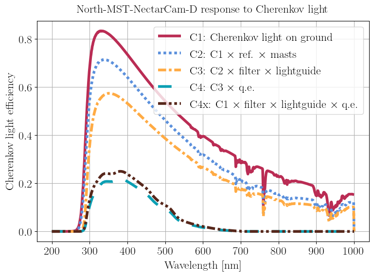 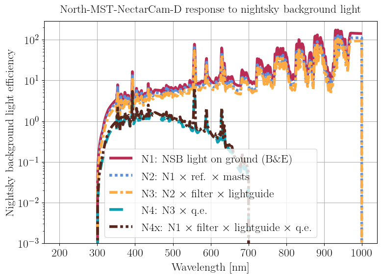{kind=link}
{kind=link}
Command line arguments¶
- tel_name (str, required)
Telescope name (e.g. North-LST-1, South-SST-D, …)
- model_version (str, optional)
Model version (default=prod4)
- verbosity (str, optional)
Log level to print (default=INFO).
Example¶
MST-NectarCam - Prod4
Runtime < 1 min.
python applications/validate_camera_efficiency.py --tel_name North-MST-NectarCam-D --model_version prod4
Todo
Change default model to default (after this feature is implemented in db_handler)
Fix the setStyle. For some reason, sphinx cannot built docs with it on.
validate_camera_fov¶
Summary¶
This application calculate the camera FoV of the telescope requested and plot the camera as seen for an observer facing the camera.
An example of the camera plot can be found below.
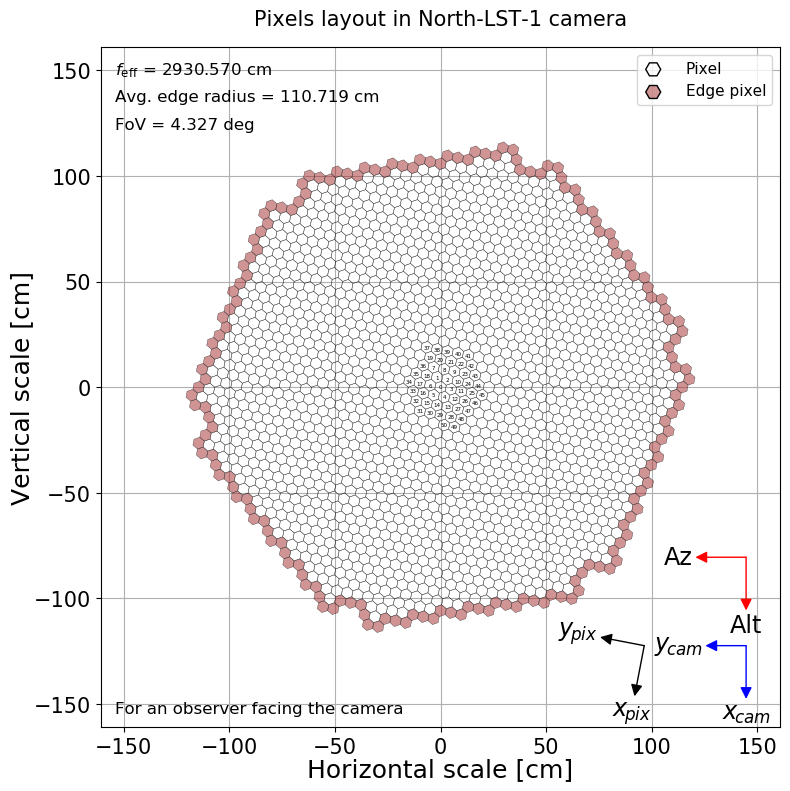{kind=link}
Command line arguments¶
- tel_name (str, required)
Telescope name (e.g. North-LST-1, South-SST-D, …)
- model_version (str, optional)
Model version (default=prod4)
- verbosity (str, optional)
Log level to print (default=INFO).
Example¶
LST - Prod4
Runtime 2-3 min
python applications/validate_camera_fov.py --tel_name North-LST-1 --model_version prod4
Todo
Change default model to default (after this feature is implemented in db_handler)
Fix the setStyle. For some reason, sphinx cannot built docs with it on.